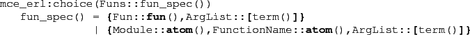
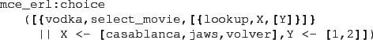

Next: Node and Global Dictionaries Up: Introduction Previous: Limitations Contents
The main addition to the basic Erlang language is a nondeterministic feature.
By calling the function mce_erl:choice with
a set of function applications as arguments, McErlang will randomly select one
of the functions as its continuation.

The example below builds a set of continuation alternatives using
the list comprehension construct:

To execute the nondeterministic construct
McErlang will choose randomly one of the continuation alternatives
whereas in model checking mode, all alternatives will of course be
investigated.